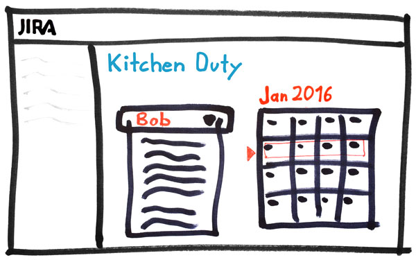
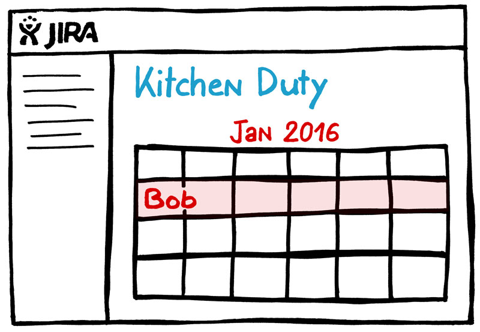

This tutorial will show you how to write a simple Plugin for Atlassian JIRA®. The tutorial will focus on JIRA® 7.0 and will guide you step by step. Note that we are developing a JIRA Plugin for Hosted JIRA instances only. If you are interessted in developing Plugins for JIRA Cloud you might want to check out Atlassian Connect.
Intended Audience - This tutorial implies that you already have knowledge about JavaEE software development with Apache Maven at best with JetBrains IntelliJ IDEA. You will need no prior knowledge about JIRA development. But you should at least know what JIRA is and that it has a Plugin system to install external plugins.
You probably use Atlassian JIRA already to master your agile projects with Scrum and Kanban.
But one thing is running out of hand in every office. The kitchen duty often lacks control and planning.
Why is the dish-washer full of dirty dishes but not turned on? Why are there no clean dishes?
These are the things we want to solve with our JIRA Plugin.
Since we know the problem now combinded with beeing master developers we came up pretty fast with some kick-ass mockups. That led us to the following user stories with acceptance criteria.
Kitchen Duty Planning Page
User Story
As office-boss I want to assign people for kitchen duty on a weekly basis to improve the kitchens tidiness.
Acceptance Criteria
Kitchen Duty Overview Page
User Story
As office-knave I want to see who is scheduled for this weeks kitchen duty to improve obedience.
Acceptance Criteria
That sounds like some simple features to implement so let's get to it.
First install the Atlassian SDK and Oracle Java JDK 8 on your system.
After the installation all the atlas-* commands and java command should be on the PATH variable.
Let's do a short version check of the installed Atlassian SDK tools. I am using a Mac so the output will look a little different if you use another OS.
ATLAS Version: 6.1.0
ATLAS Home: /Applications/Atlassian/atlassian-plugin-sdk-6.1.0
ATLAS Scripts: /Applications/Atlassian/atlassian-plugin-sdk-6.1.0/bin
ATLAS Maven Home: /Applications/Atlassian/atlassian-plugin-sdk-6.1.0/apache-maven-3.2.1
AMPS Version: 6.1.2
--------
Executing: /Applications/Atlassian/atlassian-plugin-sdk-6.1.0/apache-maven-3.2.1/bin/mvn --version -gs /Applications/Atlassian/atlassian-plugin-sdk-6.1.0/apache-maven-3.2.1/conf/settings.xml
Java HotSpot(TM) 64-Bit Server VM warning: ignoring option MaxPermSize=256M; support was removed in 8.0
Apache Maven 3.2.1 (ea8b2b07643dbb1b84b6d16e1f08391b666bc1e9; 2014-02-14T18:37:52+01:00)
Maven home: /Applications/Atlassian/atlassian-plugin-sdk-6.1.0/apache-maven-3.2.1
Java version: 1.8.0_45, vendor: Oracle Corporation
Java home: /Library/Java/JavaVirtualMachines/jdk1.8.0_45.jdk/Contents/Home/jre
Default locale: de_DE, platform encoding: UTF-8
OS name: "mac os x", version: "10.10.5", arch: "x86_64", family: "mac"Now check if Java is correctly installed.
java version "1.8.0_45"
Java(TM) SE Runtime Environment (build 1.8.0_45-b14)
Java HotSpot(TM) 64-Bit Server VM (build 25.45-b02, mixed mode)Ok once you got all that set-up we can start.
We will now create the JIRA Plugin via the Atlassian SDK command atlas-create-jira-plugin. Change to a folder where you want to create your Plugin.
You will be asked to specify a groupId, artifactId, version and package. You can see my choices below.
...
Define value for groupId: : com.comsysto
Define value for artifactId: : kitchen-duty-plugin
Define value for version: 1.0.0-SNAPSHOT: :
Define value for package: com.comsysto: : com.comsysto.kitchen.duty
....
Confirm
Y
...Now the command should have created a folder called like the artifactId, in our case kitchen-duty-plugin.
pom.xml and custom packaging via atlas-package
the SDK builds an OSGi Plugin bundle in form of a jar file.
Use your favorite Java IDE to open the project. I use JetBrains IntelliJ IDEA since it is just awesome. If you want to use Eclipse it is fine with me but all the screenshots will be done with IntelliJ.
Once you have it opened we need to create 3 files for better usage with git and to tell the IDE how we want our indentation.
Create .editorconfig and add statements for line endings, charset and tab indentation. Since IntelliJ is awesome EditorConfig Plugin is already installed. If you are using another IDE get the plugin now.
# EditorConfig is awesome: http://EditorConfig.org
root = true
[*]
end_of_line = lf
insert_final_newline = true
charset = utf-8
[*.html]
indent_style = space
indent_size = 4
[*.js]
indent_style = space
indent_size = 4
[*.css]
indent_style = space
indent_size = 4
[*.xml]
indent_style = space
indent_size = 4
[*.java]
indent_style = space
indent_size = 4
[*.vm]
indent_style = space
indent_size = 4Create .gitignore and add ignore statements for files we do not want to commit.
.idea/
*.iml
*.log
target/Create .gitattributes and set line endings to unix.
*.svg eol=lf
*.html eol=lf
*.js eol=lf
*.css eol=lf
*.scss eol=lf
*.json eol=lf
*.sh eol=lf
*.yml eol=lf
*.md eol=lf
*.txt eol=lf
*.java eol=lf
*.properties eol=lf
*.xml eol=lfEdit pom.xml and add line <version>3.3</version> to maven-compiler-plugin.
<plugin>
<artifactId>maven-compiler-plugin</artifactId>
<version>3.3</version>
<configuration>
<source>1.7</source>
<target>1.7</target>
</configuration>
</plugin>Also add in the pom.xml right before the closing </dependencies>.
<dependencies>
...
<dependency>
<groupId>com.atlassian.sal</groupId>
<artifactId>sal-api</artifactId>
<version>3.0.3</version>
<scope>provided</scope>
</dependency>
</dependencies>Now open Preferences in IntelliJ and set the built-in maven of the SDK together with the settings.xml
(Tip: By calling atlas-version all paths including home directory of SDK are printed)
Since we need the ATLAS_HOME environment variable to get maven inside IntelliJ to work we set that as well.
Now you can click on the Maven-Tab on the right and click compile and you should have a successful build.
If you do a Build > Make Project now and open the MyPluginComponentImpl.java you should have no errors.
You can skip this chapter if you already know OSGi or if you are not interested in the deep internals of imports and exports beetween OSGi modules. The next Step of the tutorial will build on this knowledge.
As you opened MyPluginComponentImpl.java already you might have seen some annotations like @ExportAsService and @ComponentImport.
There is also an important passage of maven-jira-plugin in the pom.xml that contains the following lines.
...
<artifactId>maven-jira-plugin</artifactId>
...
<instructions>
<Atlassian-Plugin-Key>${atlassian.plugin.key}</Atlassian-Plugin-Key>
<Export-Package>
com.comsysto.kitchen.duty.api,
</Export-Package>
<Import-Package>
org.springframework.osgi.*;resolution:="optional",
org.eclipse.gemini.blueprint.*;resolution:="optional",
*
</Import-Package>
<Spring-Context>*</Spring-Context>
</instructions>We will now dive into unterstanding what all that means. First you should read the Wikipedia Article on OSGi.
Services (OSGi)
Each bundle can publish and find interfaces and therefore use functionality from other bundles. JIRA itself is composed of some OSGi bundles itself. Therefore we need to tell the Atlassian SDK which JIRA interfaces we want to use (the OSGi framework then finds the right bundle for us automatically).
Life-Cycle (OSGi)
We can install, start and stop OSGi bundles during runtime. That means, while JIRA is running our plugin can be installed, started and stopped.
Bundles (OSGi)
Bundles (also called modules) only share Interfaces with other modules. You want to hide your implementation. The Atlassian SDK creates a jar file with
a custom MANIFEST.mf from the Import/Export-Package instructions of pom.xml and the Atlassian Spring Scanner Annotations e.g. @ComponentImport.
We run the package command, so that the jar file is build.
...
[INFO] Building jar: /Users/../kitchen-duty-plugin/target/kitchen-duty-plugin-1.0.0-SNAPSHOT.jar
[INFO] ------------------------------------------------------------------------
[INFO] BUILD SUCCESS
[INFO] ------------------------------------------------------------------------We can now inspect the MANIFEST.mf file (I have shortened it a little).
Manifest-Version: 1.0
Atlassian-Build-Date: 2015-12-15T18:43:43+0100
Atlassian-Plugin-Key: com.comsysto.kitchen-duty-plugin
Bundle-Name: kitchen-duty-plugin
Bundle-SymbolicName: com.comsysto.kitchen-duty-plugin
Bundle-Vendor: comSysto
Bundle-Version: 1.0.0.SNAPSHOT
Export-Package: com.comsysto.kitchen.duty.api;version="1.0.0"
Import-Package: org.springframework.osgi.service.exporter.support;resolution:=optional,
org.springframework.osgi.service.importer.support;resolution:=optional,
....
Require-Capability: osgi.ee;filter:="(&(osgi.ee=JavaSE)(version=1.7))"
Spring-Context: *We see Export-Package and Import-Package statements with the values we expected from pom.xml and Annotations
Summary
@ExportAsService is used to export our interface (e.g. MyPluginComponent.java) so that other OSGi bundles can use it as Spring Bean. Maybe you want to develop a base plugin and use its functionality from a second plugin, then you know now how to do it.
@ComponentImport is used to import functionality from other OSGi bundles Spring Context such as JIRAs ApplicationProperties.
These annotations are used because JIRA uses Spring together with OSGi and these annotations help to make beans available as Spring Beans and to get them from the Spring Context (even if it is a spring context from other bundle).
If we want to do something low-level with OSGi imports and exports we can do that in the pom.xml with <Import-Package> and <Export-Package>
If you want to dive even deeper into OSGi and Atlassian read about Atlassian Spring Scanner, watch the Apache Felix Introduction Video or do the Apache Felix Tutorials.
Our base project is compiling and now we want to tackle our first User Story and implement the Kitchen Duty Planning page.
But before we start the implementation we drink another coffee and get our brain up to software-architecture-design-speed, because we need to make some design decisions now. Think of the following section as a little Story Workshop we do with our virtual Product Owner and the virtual Scrum Team.
Ok sounds like basic stuff we did a trillion times already in some other projects. But the question is, how do we do this the cool Atlassian way?
Most of you might know Bootstrap and use it to build sweet responsive websites. Atlassian also has such a Framework that drives their Applications. It is called Atlassian User Interface in short AUI.

Shopping List
Ok now we have selected the two frontend components we want to use and continue with server side components.
The caffeine kicks in now and our spacey software-engineering mind is fully operational to design the server components.
We could use a Servlet and simple MVC approach with lame JSP-style-pages and normal Request-Response-Cycle ...
But since that is just lame we will do it with REST Resources and a simple view that has a lot of (ugly) JavaScript code to interact with the REST Resources.
So after thinking about that a little we came up with the scheme on the right. (What is Webwork Action? We will learn about that soon.)
Component Overview
KitchenDutyPlanningWebworkAction is a basic “Servlet” that provides the actual Page to browse to and provides the HTML View and JavaScript.
JavaScript Controller contains a bunch of JS-Code to interact between the HTML-View and the REST-Resources.
HTML View is our template that provides basic HTML components for the JavaScript Controller to hook into.
UserRestResource provides REST Resources for searching JIRA usernames via JAX-WS.
KitchenDutyPlanningRestResource provides REST Resources for CRUD operations on the KitchenDutyPlanningModel via JAX-WS.
KitchenDutyPlanningModel is our simple Pojo Model which we use to persist Data and also use as JSON representation in the JavaScript controller.
You might say “WebworkAction? That came out of nowhere!” and you are right. I will introduce you to it, since this is one way to provide Pages inside JIRA in a nice way.
You can read about JIRA Webwork Action or Webwork plugin module but you will also understand what is going on after my short introduction.
Introduction
Basically Webwork Actions are Controllers (MVC paradigm) that react to certain URLs in JIRA.
They handle Authentication (is user logged in?) and Authorisation (has user rights to view page?) easily.
They let us define multiple Views (MVC paradigm) for example an Error-View and a Success-View.
They provide Template Renderer like Velocity which helps us to inject some variables into the View.
atlassian-plugin.xml file (we will learn later more about that).
Ok now you know enough to get started. Open a terminal and change inside the directory of the plugin.
We will again use the Atlassian SDK to generate the basic files for us. Type the command and choose 31. Webwork Plugin
Choose Plugin Module:
1: Component Import
2: Component
3: Component Tab Panel
...
31: Webwork Plugin
...
34: Workflow Validator
Choose a number (1/2/3.../33/34): 31
Enter Plugin Module Name My Webwork Module: : Kitchen Duty Planning Webwork Module
Show Advanced Setup? (Y/y/N/n) N: : Y
Module Key kitchen-duty-planning-webwork-module: :
Module Description The Kitchen Duty Planning Webwork Module Plugin: :
i18n Name Key kitchen-duty-planning-webwork-module.name: :
i18n Description Key kitchen-duty-planning-webwork-module.description: :
Enter Action Classname MyActionClass: : KitchenDutyPlanningWebworkAction
Enter Package Name com.comsysto.jira.webwork: : com.comsysto.kitchen.duty.webwork
Enter Alias KitchenDutyPlanningWebworkAction: :
Enter View Name success: : kitchen-duty-planning-success
Enter Template Path /templates/.../kitchen-duty-planning-success.vm: : /templates/kitchen-duty-planning-webwork-module/kitchen-duty-planning-success.vm
Add Another View? (Y/y/N/n) N: : N
Add Another Action? (Y/y/N/n) N: : N
[INFO] Adding the following items to the project:
[INFO] [class: com.comsysto.kitchen.duty.webwork.KitchenDutyPlanningWebworkAction]
[INFO] [class: ut.com.comsysto.kitchen.duty.webwork.KitchenDutyPlanningWebworkActionTest]
[INFO] [dependency: org.apache.httpcomponents:httpclient]
[INFO] [dependency: org.mockito:mockito-all]
[INFO] [dependency: org.slf4j:slf4j-api]
[INFO] [module: webwork1]
[INFO] [resource: kitchen-duty-planning-success.vm]
[INFO] i18n strings: 2
Add Another Plugin Module? (Y/y/N/n) N: : N
[INFO] ------------------------------------------------------------------------
[INFO] BUILD SUCCESS
[INFO] ------------------------------------------------------------------------
[INFO] Total time: 10:53 min
[INFO] Finished at: 2015-12-16T14:12:07+01:00
[INFO] Final Memory: 29M/309M
[INFO] ------------------------------------------------------------------------After we have done that we see that a lot of code and files have been generated. You can see all changes in this GitHub Commit 162ed706c7f4be0356871a4a6f8bb6398b38854f.
What is important for us are the following changes:
atlassian-plugin.xml contains now the webwork definiton of our Action and View.
<webwork1 key="kitchen-duty-planning-webwork-module" name="Kitchen Duty Planning Webwork Module" i18n-name-key="kitchen-duty-planning-webwork-module.name">
<description key="kitchen-duty-planning-webwork-module.description">The Kitchen Duty Planning Webwork Module Plugin</description>
<actions>
<action name="com.comsysto.kitchen.duty.webwork.KitchenDutyPlanningWebworkAction" alias="KitchenDutyPlanningWebworkAction">
<view name="kitchen-duty-planning-success">/templates/kitchen-duty-planning-webwork-module/kitchen-duty-planning-success.vm</view>
</action>
</actions>
</webwork1>pom.xml contains now needed dependencies.
<dependency>
<groupId>org.apache.httpcomponents</groupId>
<artifactId>httpclient</artifactId>
<version>4.1.1</version>
<scope>test</scope>
</dependency>
<dependency>
<groupId>org.slf4j</groupId>
<artifactId>slf4j-api</artifactId>
<version>1.6.6</version>
<scope>provided</scope>
</dependency>
<dependency>
<groupId>org.mockito</groupId>
<artifactId>mockito-all</artifactId>
<version>1.8.5</version>
<scope>test</scope>
</dependency>You should be able to open the KitchenDutyPlanningWebworkAction in IntelliJ now.
Now we change the execute Method to work with our view:
@Override
public String execute() throws Exception {
return "kitchen-duty-planning-success";
}Now our view will be called when we browse to the Webactions URL which is simply http://server/jira/secure/[WebWorkAlias].jspa in our case http://server/jira/secure/KitchenDutyPlanningWebworkAction.jspa.
We will now start JIRA wich will have our Plugin installed with the following command. (Go get another coffee, this will take some time to download dependencies)
...
[INFO] [talledLocalContainer] INFORMATION: Server startup in 37754 ms
[INFO] [talledLocalContainer] Tomcat 8.x started on port [2990]
[INFO] jira started successfully in 59s at http://localhost:2990/jira
[INFO] Type Ctrl-D to shutdown gracefully
[INFO] Type Ctrl-C to exitNow browse to http://localhost:2990/jira/secure/KitchenDutyPlanningWebworkAction.jspa and you should see:
Alright. That is working but it does not look very nice. We will improve the look and functionality step by step.
What do we need to improve the UX?
We know what we need and I will introduce you to the Atlassian Components which will do the job.
Edit the kitchen-duty-planning-success.vm which resides in src/main/resources/templates/kitchen-duty-planning-webwork-module/ like this.
<html>
<head>
<title>Planning Page - Kitchen Duty Plugin</title>
<meta name="decorator" content="atl.admin">
</head>
<body>
<h1>Kitchen Duty Plugin - Planning Page</h1>
<p>Now it looks nice :)</p>
</body>
</html>
The important thing is the
Page Decorator
part which says <meta name="decorator" content="atl.admin">.
So what is that about? This statement tells the Page Decorator to render the layout for atl.admin
which is basically the administrator layout.
After you have saved the changes run atlas-run again your shell to start JIRA and browse to the Planning Page. It should look like this now.
If you had atlas-run still running and do not see your changes, try opening a second shell and type atlas-cli wait for the prompt, type pi and press enter. Now your plugin is force-rebuild. You can read more about that later on in the section about faster development.
We could just simply fiddle our own sidebar together but that is not the professional way. Do do it the professional way we will use the Web Section Plugin Module and the Web Item Plugin Module to hook into the JIRA Sidebar which renders for every administrator tab section, so that it will look like this.
You might need another coffee because here comes the code for the atlassian-plugin.xml which resides in src/main/resources/
<atlassian-plugin>
...
<web-section key="admin_kitchen_duty_planning_section"
name="admin_kitchen_duty_planning_section"
location="admin_plugins_menu"
weight="20"
i18n-name-key="kitchen-duty-plugin.admin.planning.page.web.section.name">
<label key="kitchen-duty-plugin.admin.planning.page.web.section.name" />
</web-section>
<web-item key="admin_kitchen_duty_planning_webitem"
name="admin_kitchen_duty_planning_webitem"
section="admin_plugins_menu/admin_kitchen_duty_planning_section"
weight="15"
i18n-name-key="kitchen-duty-plugin.admin.planning.page.web.item.name">
<label key="kitchen-duty-plugin.admin.planning.page.web.item.name" />
<link linkId="admin_kitchen_duty_planning_webitem_link">/secure/KitchenDutyPlanningWebworkAction.jspa</link>
</web-item>
</atlassian-plugin>The web-section is the "container" which hold web-items and has a headline. Web-items are basically the navigation links and have a name and URL.
So what is happening here?
The web-section does need a unique key and name. The weight defines the order of the section relative to sections of other addons.
The location defines the page or tab under which the web-section should be injected; we use the Addons Tab.
The <label key is some OSGi stuff I think, just name the key as the i18n-name-key.
Lastly the i18n-name-key is the identifier to the kitchen-duty-plugin.properties language file which contains the actual translations.
The web-item has the same attributes as the web-section. But you need to specify a section which points to our web-section name.
The <link object contains the actual URL to our page.
Since we heard about i18n now we need to define our values in the language file kitchen-duty-plugin.properties.
# websection/webitems
kitchen-duty-plugin.admin.planning.page.web.section.name = Kitchen Duty Plugin
kitchen-duty-plugin.admin.planning.page.web.item.name = Planning PageAlright this was a little complicated but now we have a nice sidbar navigation link.
Ok this is a no-brainer since you already saw the content section. But to be consistent here is the screenshot ;)
If you want to be the a-student you can read about AUI Layout and play around a little. We will use that later to further style our pages.
You already saw some i18n for web-section/item names. Now we want to i18n-ize our html template.
You might have seen the file-ending .vm already. That means the
kitchen-duty-planning-success.vm is an Apache Velocity template.
Some might wonder now "Didn't the ancient greek use velocity?! Is it really still around?". Yes it is and I think it does a great job.
So let's get to action, we will change our html code using i18n.getText("i18n.key") which is a velocity helper to render the i18n value for a given key.
<html>
<head>
<title>$i18n.getText("kitchen-duty-plugin.admin.planning.page.title")</title>
<meta name="decorator" content="atl.admin">
</head>
<body>
<h1>$i18n.getText("kitchen-duty-plugin.admin.planning.page.headline")</h1>
<p>Now it looks nice :)</p>
</body>
</html>Now we need to add the translations to the kitchen-duty-plugin.properties file and we are done internationalising our page.
# kitchen-duty-planning-success.vm
kitchen-duty-plugin.admin.planning.page.headline = Kitchen Duty Plugin - Planning Page
kitchen-duty-plugin.admin.planning.page.title = Planning Page - Kitchen Duty PluginWe are using a Webwork Action for our planning page and we can simply set roles-required="admin" in the
atlassian-plugin.xml to enforce administrator only authorization.
<webwork1 key="kitchen-duty-planning-webwork-module"
...
roles-required="admin">If you log out of JIRA now and browse again to the planning page you will see the administrator login form. When logging in as admin (password admin) you should be redirected to the planning page.

The grafic shows which components we implemented in this section.
We will now create the User Search REST Resource so that our JS-Controller can search for usernames.
What is a REST Resource? It is simply just a basic Controller (MVC) that reacts to certain HTTP Requests with a specific response.
Atlassian uses JAX-WS and JAXB for it's built in REST Resources. The actual implementation is hidden from us, and we don't really care about it since we just need to know that somewhere inside JIRA are OSGi bundles which provide the JAX-WS and JAXB implementation.
Ok, enough of OSGi and theoretical jibber jabber! Let's create our REST Resource with an Atlassian SDK command, like we did create the Webwork Action before.
Execute the command and choose 14: REST Plugin Module and fill out the prompts as stated below.
Executing: /Applications/Atlassian/atlassian-plugin-sdk-6.1.0/apache-maven-3.2.1/bin/mvn com.atlassian.maven.plugins:maven-jira-plugin:6.1.2:create-plugin-module -gs /Applications/Atlassian/atlassian-plugin-sdk-6.1.0/apache-maven-3.2.1/conf/settings.xml
Java HotSpot(TM) 64-Bit Server VM warning: ignoring option MaxPermSize=256M; support was removed in 8.0
[INFO] Scanning for projects...
[INFO]
[INFO] Using the builder org.apache.maven.lifecycle.internal.builder.singlethreaded.SingleThreadedBuilder with a thread count of 1
[INFO]
[INFO] ------------------------------------------------------------------------
[INFO] Building kitchen-duty-plugin 1.0.0-SNAPSHOT
[INFO] ------------------------------------------------------------------------
[INFO]
[INFO] --- maven-jira-plugin:6.1.2:create-plugin-module (default-cli) @ kitchen-duty-plugin ---
Choose Plugin Module:
1: Component Import
...
14: REST Plugin Module
15: RPC Endpoint Plugin
...
Choose a number (...): 14
Enter New Classname MyRestResource: : UserSearchResource
Enter Package Name com.comsysto.rest: : com.comsysto.kitchen.duty.rest
Enter REST Path /usersearchresource: : /kitchenduty
Enter Version 1.0: : 1.0
Show Advanced Setup? (Y/y/N/n) N: : y
Module Name User Search Resource: : Kitchen Duty Resources
Module Key user-search-resource: : kitchen-duty-resources
Module Description The User Search Resource Plugin: : All Kitchen Duty REST Resources
i18n Name Key user-search-resource.name: : kitchen-duty-plugin.rest.resources.name
i18n Description Key user-search-resource.description: : kitchen-duty-plugin.rest.resources.description
Add Package To Scan? (Y/y/N/n) N: : y
Enter Package: com.comsysto.kitchen.duty.rest
...
Add Package To Scan? (Y/y/N/n) N: : n
Add Dispatcher? (Y/y/N/n) N: : n
[INFO] Adding the following items to the project:
[INFO] [class: com.comsysto.kitchen.duty.rest.UserSearchResourceModel]
[INFO] [class: com.comsysto.kitchen.duty.rest.UserSearchResource]
[INFO] [class: it.com.comsysto.kitchen.duty.rest.UserSearchResourceFuncTest]
[INFO] [class: ut.com.comsysto.kitchen.duty.rest.UserSearchResourceTest]
[INFO] [dependency: com.atlassian.plugins.rest:atlassian-rest-common]
[INFO] [dependency: com.atlassian.sal:sal-api]
[INFO] [dependency: javax.servlet:servlet-api]
[INFO] [dependency: javax.ws.rs:jsr311-api]
[INFO] [dependency: javax.xml.bind:jaxb-api]
[INFO] [dependency: org.apache.wink:wink-client]
[INFO] [dependency: org.mockito:mockito-all]
[INFO] [module: rest]
[INFO] i18n strings: 2
Add Another Plugin Module? (Y/y/N/n) N: : n
[INFO] ------------------------------------------------------------------------
[INFO] BUILD SUCCESS
[INFO] ------------------------------------------------------------------------
[INFO] Total time: 01:52 min
[INFO] Finished at: 2016-01-16T20:07:35+01:00
[INFO] Final Memory: 24M/328M
[INFO] ------------------------------------------------------------------------The SDK created and updated many files now and before we get into all the details let's fire up atlas-run again
and see what has been created for us.
Once JIRA is started browse to http://server/jira/rest/kitchenduty/1.0/message and you should see the following.
That's nice. But now we need to understand what is going on. So here is a short recap of what has been created.
The pom.xml has been altered to provide necessary dependencies for JAX-WS API, Servlet API and some testing Dependencies.
The atlassian-plugin.xml has been altered to register the REST Resource to listen to the baseUrl http://server/jira/rest/kitchenduty/1.0/*
There now is a UserSearchResource.java which is the actual REST Controller which delivers the response.
In addition to the REST Controller there is UserSearchResourceModel.java which is the Model which is delivered as XML in the REST Controllers response.
We will now get into all the details and implement the needed features for the user search on the fly.
The pom.xml has these new lines which are quite self explanatory. If you want to read everything in detail read the REST Plugin Module documentation.
<dependency>
<groupId>javax.servlet</groupId>
<artifactId>servlet-api</artifactId>
<version>2.4</version>
<scope>provided</scope>
</dependency>
<dependency>
<groupId>javax.xml.bind</groupId>
<artifactId>jaxb-api</artifactId>
<version>2.1</version>
<scope>provided</scope>
</dependency>
<dependency>
<groupId>com.atlassian.plugins.rest</groupId>
<artifactId>atlassian-rest-common</artifactId>
<version>1.0.2</version>
<scope>provided</scope>
</dependency>
<dependency>
<groupId>org.apache.wink</groupId>
<artifactId>wink-client</artifactId>
<version>1.1.3-incubating</version>
<scope>test</scope>
</dependency>As already mentioned the atlassian-plugin.xml has been altered to register the REST Resource to listen to the baseUrl http://server/jira/rest/kitchenduty/1.0/*.
The path and version build the baseurl relative to http://server/jira/rest/*.
package will enable Component Scan (which I think is redundant, but doesn't hurt).
<rest name="Kitchen Duty Resources"
i18n-name-key="kitchen-duty-plugin.rest.resources.name"
key="kitchen-duty-resources"
path="/kitchenduty"
version="1.0">
<description key="kitchen-duty-plugin.rest.resources.description">All Kitchen Duty REST Resources</description>
<package>com.comsysto.kitchen.duty.rest</package>
</rest>You already know i18n-name-key and the other attributes from the Webwork Action and therefore are not wondering that there are some new i18n key/value pairs inside kitchen-duty-plugin.properties.
kitchen-duty-plugin.rest.resources.name=Kitchen Duty Resources
kitchen-duty-plugin.rest.resources.description=All Kitchen Duty REST Resources
In the directory src/main/java/ in the package com.comsysto.kitchen.duty.rest there is now the
UserSearchResource.java and the UserSearchResourceModel.java.
Change the code of the UserSearchResource.java to the following to provide GET Endpoint to search usernames.
TO BE CONTINUED - We will continue this tutorial soon.
We will then tend to
Creating REST Resources for UserSearch and KitchenDutyPlanningModel operations.
Creating JavaScript Controller and HTML view with Atlassian AUI and interact with REST Resources.
Of course there will be more steps following after that.
The project sources are free for personal and commercial use under the terms of the Creative Commons Attribution 3.0 Unported (CC BY 3.0) License. The author is comSysto GmbH. The dishes icon in the logo is licensed under Creative Commons Attribution 3.0 (CC BY 3.0 US) License
{kind=link}
{kind=link}
{kind=link}
{kind=link}
{kind=link}
{kind=link}
{kind=link}
{kind=link}
{kind=link}
{kind=link}
{kind=link}
{kind=link}
{kind=link}
{kind=link}